Cadre du projet
Introduction
Le projet "MaVille" vise à créer une application facilitant la gestion et la communication des travaux publics et privés à Montréal,
en améliorant la coordination entre les parties prenantes et en informant les citoyens des impacts sur leur quotidien.
Échéancier
Échéancier du projet MaVille
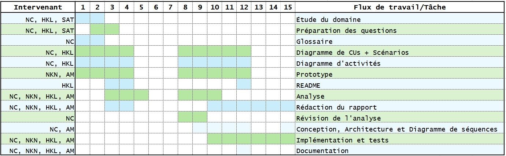Exigences
-
Exigence 1 : Inscription et Connexion
- Description : Les résidents et les intervenants peuvent s'inscrire et se connecter à l'application.
- Détails :
- Résidents : Inscription avec nom, date de naissance (≥16 ans), courriel unique, mot de passe, adresse résidentielle.
- Intervenants : Inscription avec nom, courriel unique, mot de passe, type d'intervenant, code de la ville à 8 chiffres.
- Connexion pour tous via courriel et mot de passe.
-
Exigence 2 : Consultation des Travaux et Entraves
- Description : Les résidents peuvent consulter les travaux en cours ou prévus, ainsi que les entraves routières.
- Détails :
- Filtrer les travaux par quartier, type ou rue.
- Rechercher les entraves liées aux travaux.
-
Exigence 3 : Notifications Personnalisées
- Description : Les résidents reçoivent des notifications sur les travaux affectant leur quartier.
- Détails :
- Gestion des préférences : Activer/désactiver les notifications pour des rues ou quartiers spécifiques.
- Possibilité de mettre à jour les préférences à tout moment.
-
Exigence 4 : Participation Citoyenne
- Description : Les résidents peuvent participer à la planification des travaux et soumettre des requêtes.
- Détails :
- Planification participative : Indiquer les plages horaires préférées pour les travaux.
- Requêtes de travaux résidentiels : Soumission, suivi et interaction avec les intervenants.
-
Exigence 5 : Gestion des Projets par les Intervenants
- Description : Les intervenants peuvent gérer leurs projets et candidatures.
- Détails :
- Soumission et mise à jour des projets.
- Candidatures sur requêtes : Soumission, retrait et confirmation après sélection.
- Gestion des conflits avec les préférences des résidents.
-
Exigence 6 : Intégration avec les APIs de la Ville de Montréal
- Description : L'application récupère les informations sur les travaux et entraves via les APIs officielles.
- Détails :
- Mise à jour régulière des données pour assurer leur fraîcheur.
- Gestion des erreurs en cas d'indisponibilité des APIs.
-
Exigence 7 : Navigation Intuitive
- Description : L'application offre une navigation simple et efficace.
- Détails :
- Menus clairs avec limitation à 3 niveaux d'imbrication.
- Possibilité de retour au menu principal à tout moment.
Glossaire
- Application MaVille
- Outil numérique proposé pour améliorer la communication des activités et des travaux prévus dans la ville de Montréal, visant à réduire les perturbations
pour les résidents. - Authentification
- Processus par lequel un utilisateur fournit ses identifiants (nom d'utilisateur et mot de passe) pour accéder à l'application.
- Chantier
- Zone où des travaux de construction, de rénovation ou d'entretien sont effectués, pouvant affecter la circulation et l'accès aux services.
- Résident
- Citoyen vivant dans la ville, utilisateur potentiel de l'application qui peut consulter les travaux en cours et soumettre des signalements.
- Intervenant
- Professionnel ou agent responsable de la gestion des travaux dans la ville, chargé de soumettre des projets de travaux et de mettre à jour les informations des chantiers.
- Travaux publics
- Travaux réalisés par la ville ou ses partenaires pour améliorer les infrastructures publiques, comme les routes, les ponts, et les réseaux de services.
- Travaux privés
- Travaux réalisés par des entreprises ou des particuliers sur des propriétés privées, souvent nécessitant des autorisations de la Ville.
- Notification personnalisée
- Message envoyé aux utilisateurs de l'application concernant des travaux ou des événements spécifiques, en fonction de leurs préférences et de leur localisation.
- Requête de travail
- Demande soumise par un résident ou un intervenant pour signaler un problème ou proposer un nouveau projet de travaux à la Ville.
- Signalement
- Action par laquelle un résident informe la Ville d'un problème ou d'une entrave liée aux travaux, permettant une réponse rapide.
- Menu principal
- Interface de l'application affichant les options disponibles pour l'utilisateur après l'authentification, permettant de naviguer vers différentes fonctionnalités de l'application.
- Code de la ville
- Notifications personnalisées
- Alertes spécifiques envoyées aux résidents en fonction de leurs préférences et de leur localisation, les informant des travaux ou des changements affectant leur quartier ou les rues qu'ils suivent.
- Info Entraves et Travaux
- Service existant de la Ville de Montréal qui fournit des informations sur les entraves à la circulation et les travaux en cours ou prévus, aidant les résidents à planifier leurs déplacements.
- Planification participative
- Approche permettant aux résidents de contribuer à la planification des travaux en indiquant leurs préférences horaires, favorisant une meilleure coordination et minimisant les perturbations dans leur quartier.
- Statut du projet
- Indicateur de l'avancement d'un projet de travaux, pouvant être "Prévu", "En cours", "Suspendu" ou "Terminé", informant les utilisateurs de l'état actuel des travaux.
Cas d'utilisation
Notes à propos du diagramme
-
Choix des acteurs
- Résident : Utilisateur qui interagit avec l'application pour obtenir des informations sur les travaux et soumettre des requêtes.
- Intervenant : Un professionnel ou une entreprise responsable de la planification, de l'exécution et de la gestion des travaux
publics et privés. Ils interagissent avec l'application pour consulter les requêtes de travail, soumettre de nouveaux projets,
et mettre à jour les informations sur les chantiers en cours. - Système (Application) : L'entité qui gère les interactions entre les utilisateurs et les fonctionnalités de l'application.
-
Choix des relations
- Include : La relation include relie l'authentification à presque tous les cas d'utilisation.
Également, pour planifier un projet de travaux, il faut trouver un horaire qui conviendrait a la majorité des résidents, il faut aussi pouvoir prendre en compte l'avis des residents sur les travaux passés pour ne pas commettre plusieurs fois les mêmes erreurs. Il est donc normal que les cas d'utilisation comme "choisir une plage horaire", "donner son avis" et "consulter les preferences" incluent l'activite de "planifier des projets de travaux"
- Include : La relation include relie l'authentification à presque tous les cas d'utilisation.
Scénarios
Scénario principal
- L'utilisateur saisit ses identifiants (nom d'utilisateur et mot de passe).
- Le système vérifie les identifiants.
- Si les identifiants sont valides, l'utilisateur accède au menu principal.
- Le système affiche le menu principal.
Scénarios alternatifs
Scénario principal
- L'utilisateur choisit l'option de consultation des travaux.
- Le système affiche les travaux en cours ou à venir.
- L'utilisateur peut filtrer les travaux par type ou localisation.
- Le système affiche les travaux filtrés.
Scénarios alternatifs
Scénario principal
- L'utilisateur choisit l'option de soumission d'une requête.
- L'utilisateur remplit le formulaire de requête.
- L'utilisateur valide et soumet la requête.
- Le système enregistre la requête et affiche un message de confirmation.
Scénarios alternatifs
Scénario principal
- L'intervenant accède au menu principal après authentification.
- L'intervenant choisit l'option "Soumettre un nouveau projet.
- L'intervenant remplit les informations du projet.
- Le système valide les informations.
- Si toutes les informations sont correctes, le projet est enregistré avec succès.
- Le système affiche un message de confirmation.
- L'intervenant retourne au menu principal.
Scénarios alternatifs
Scénario principal
- L'intervenant se connecte à l'application.
- L'intervenant sélectionne le chantier à mettre à jour.
- L'intervenant modifie les informations du chantier.
- L'intervenant enregistre les modifications.
- Le système affiche un message de confirmation que les informations ont été mises à jour.
Scénarios alternatifs
Scénario principal
- L'utilisateur paramètre ses préférences de notification dans l'application.
- Le système enregistre les paramètres.
- L'utilisateur reçoit des alertes en fonction des paramètres définis.
Scénarios alternatifs
Scénario principal
- L'intervenant se connecte à l'application.
- L'intervenant sélectionne l'option "Consulter les requêtes de travail".
- L'intervenant peut filtrer les requêtes par type de travail, date, ou localisation.
- L'application affiche la liste des requêtes de travail disponibles.
- L'intervenant peut visualiser les détails de chaque requête et soumettre sa candidature pour la réaliser.
Scénarios alternatifs
Scénario principal
- L'utilisateur se connecte à l'application.
- L'utilisateur sélectionne l'option "Modifier mon profil".
- L'utilisateur modifie les informations (nom, adresse, mot de passe, etc.).
- L'utilisateur enregistre les modifications.
- Le système confirme la mise à jour du profil.
Scénarios alternatifs
Scénario principal
- Le résident se connecte à l'application.
- Le résident sélectionne l'option "Planification participative" dans le menu.
- Le système affiche la liste des travaux prévus dans le quartier du résident.
- Le résident saisit ses plages horaires préférées pour les travaux.
- Le résident valide et enregistre ses préférences.
- Le système enregistre les préférences du résident.
Scénarios alternatifs
Scénario principal
- Le résident se connecte à l'application.
- Le résident sélectionne l'option "Donner un avis" dans le menu.
- Le résident rédige son avis sur les travaux (qualité, déroulement) et l'intervenant.
- Le résident valide et enregistre son avis.
- Le système enregistre l'avis et le transmet à l'intervenant.
Scénarios alternatifs
Scénario principal
- Le résident se connecte à l'application.
- Le résident sélectionne l'option "Consulter les préférences des autres résidents" dans le menu de planification participative.
- Le système affiche un résumé des plages horaires préférées par les autres résidents.
- Le résident peut utiliser ces informations pour ajuster ses propres préférences d'horaires si nécessaire.
- Le résident valide et quitte l'interface de consultation.
Scénarios alternatifs
Scénario principal
- L'utilisateur accède à la page d'accueil de l'application.
- L'utilisateur sélectionne l'option "S'inscrire".
- L'utilisateur choisit "Inscription comme résident".
- L'utilisateur saisit les informations requises .
- Le système valide les informations saisies.
- Le compte est créé.
- L'utilisateur reçoit un message de confirmation et est redirigé vers le menu principal.
Scénarios alternatifs
Scénario principal
- L'utilisateur accède à la page d'accueil de l'application.
- L'utilisateur sélectionne l'option "S'inscrire".
- L'utilisateur choisit "Inscription comme intervenant".
- L'utilisateur saisit les informations requises
- L'utilisateur soumet le formulaire d'inscription.
- Le système valide les informations saisies.
- Le compte est créé.
- L'utilisateur reçoit un message de confirmation et est redirigé vers le menu principal.
Scénarios alternatifs
Diagramme d'activités
Diagramme d'activité pour : Connexion
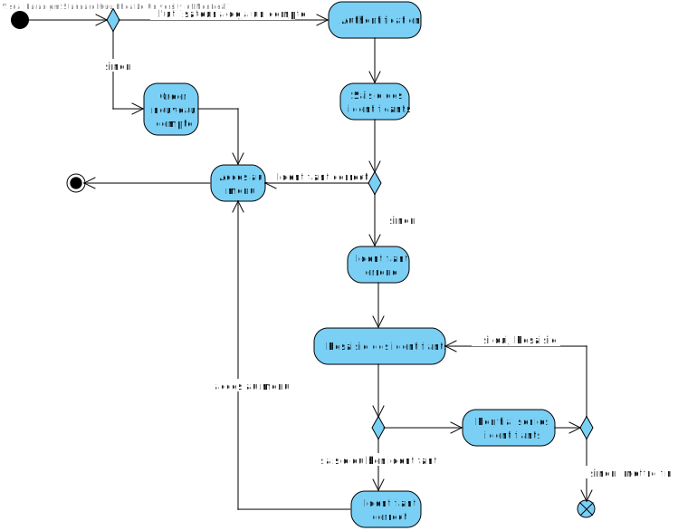Diagramme d'activité pour : Inscription en tant qu'intervenant
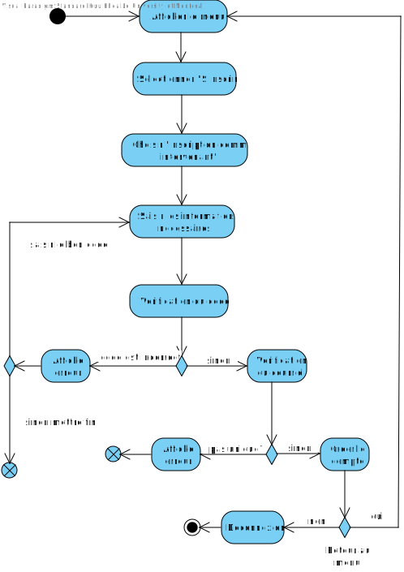Diagramme d'activité pour : Inscription en tant que résident
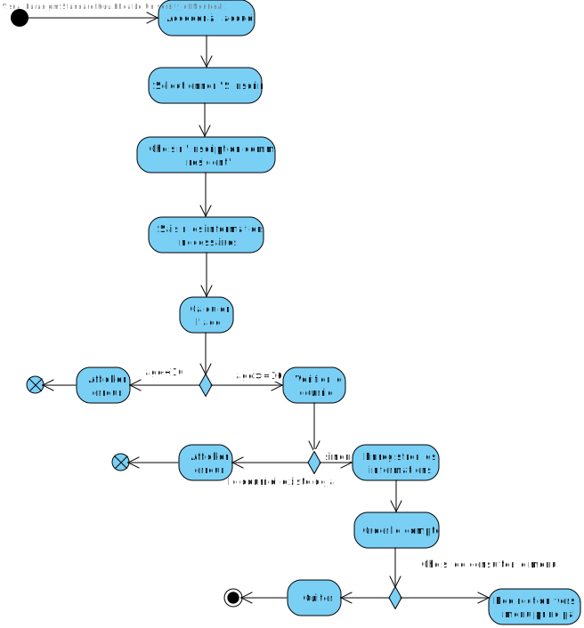Diagramme d'activité pour : Navigation du menu principal
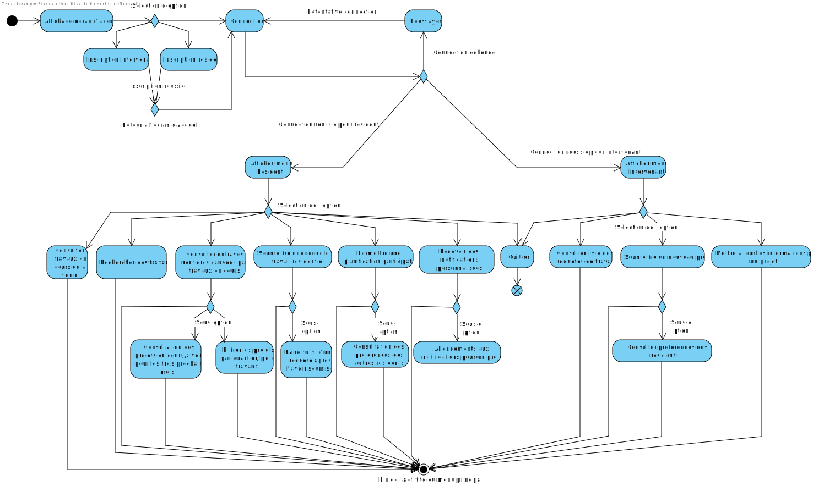Diagramme d'activité pour : Consulter travaux
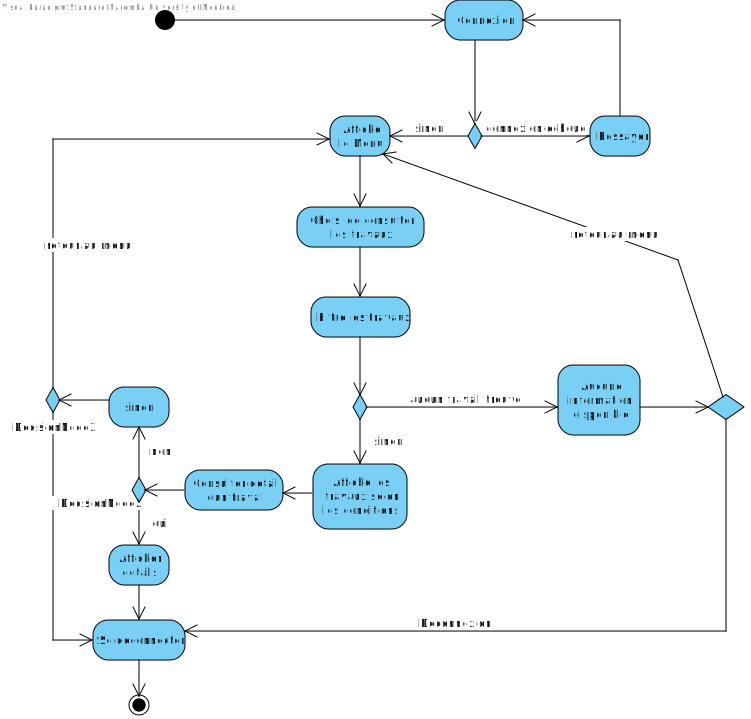Diagramme d'activité pour : Soumettre une requête
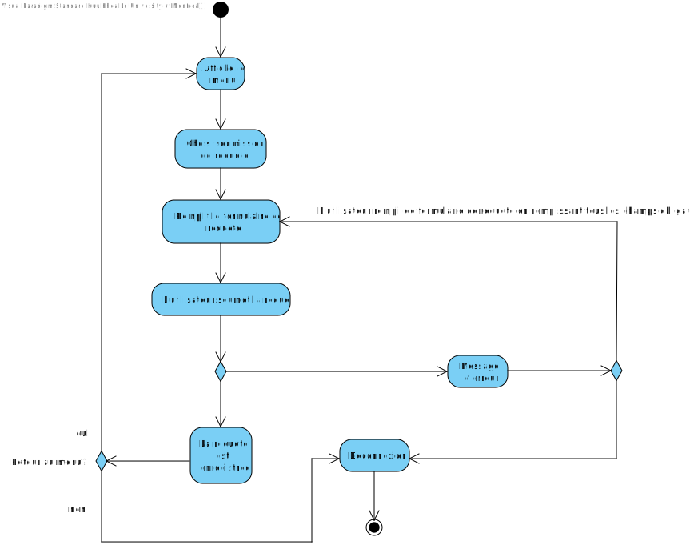Diagramme d'activité pour : Soumettre un nouveau projet
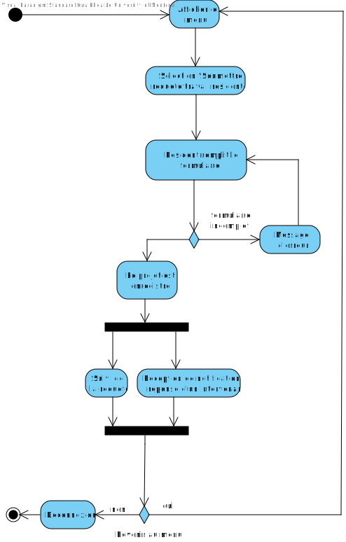Diagramme d'activité pour : Gérer ses notifications
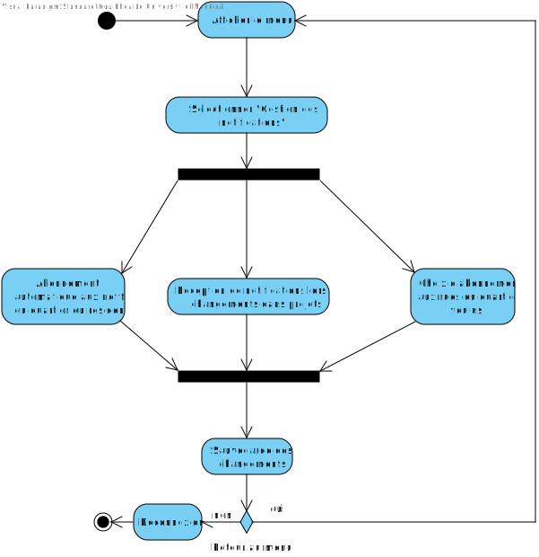Diagramme d'activité pour : Modifier les paramètres de son profil utilisateur
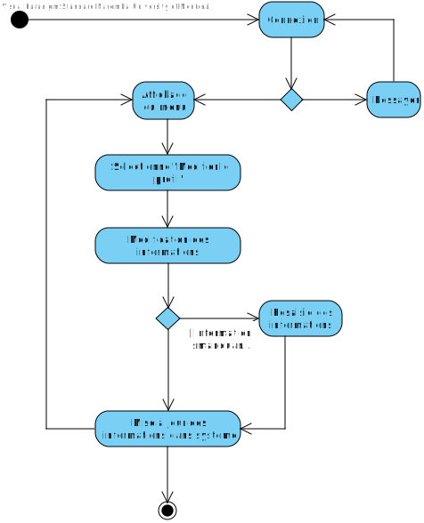Diagramme d'activité pour : Participer à une planification des travaux
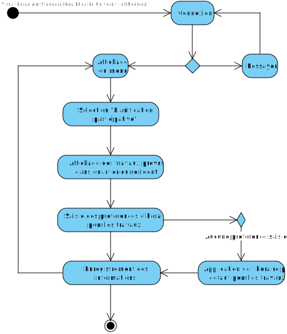Diagramme d'activité pour : Consulter la liste des requêtes de travail
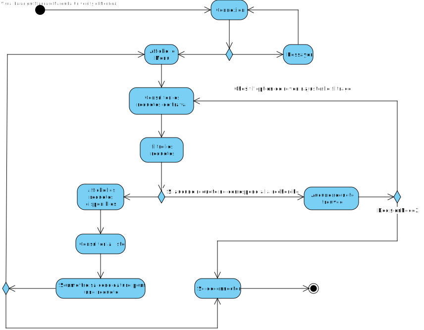Diagramme d'activité pour : Confirmation de la candidature d'un intervenant
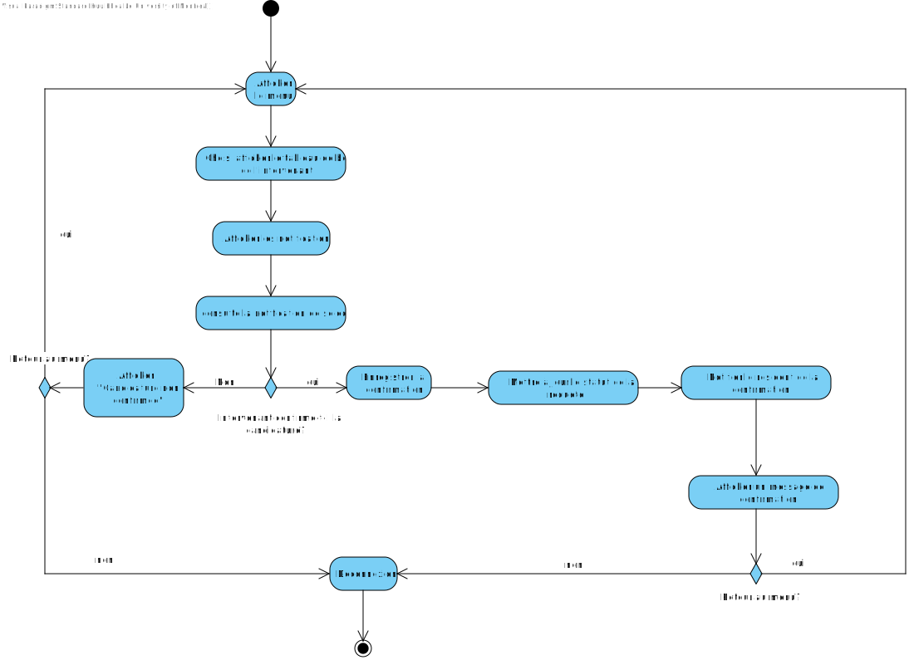Diagramme d'activité pour : Consultation des entraves
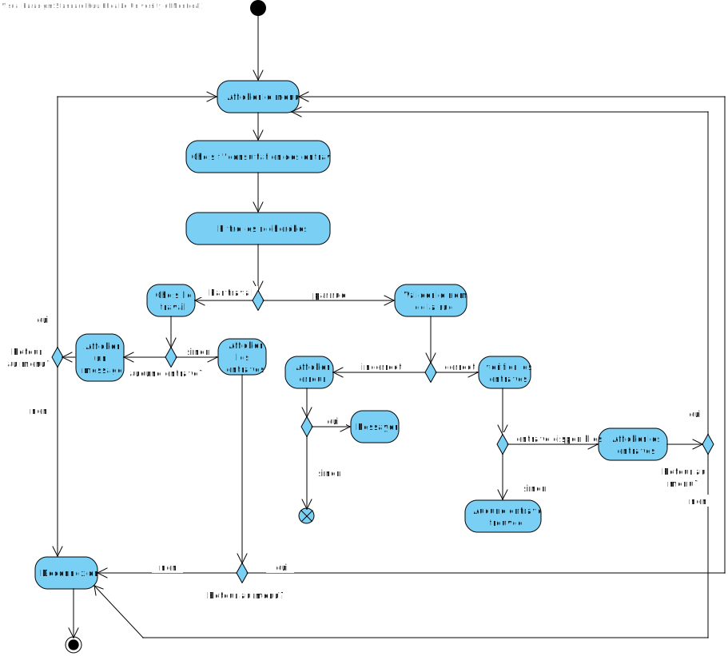Diagramme d'activité pour : Gestion des conflits de préférences des résidents
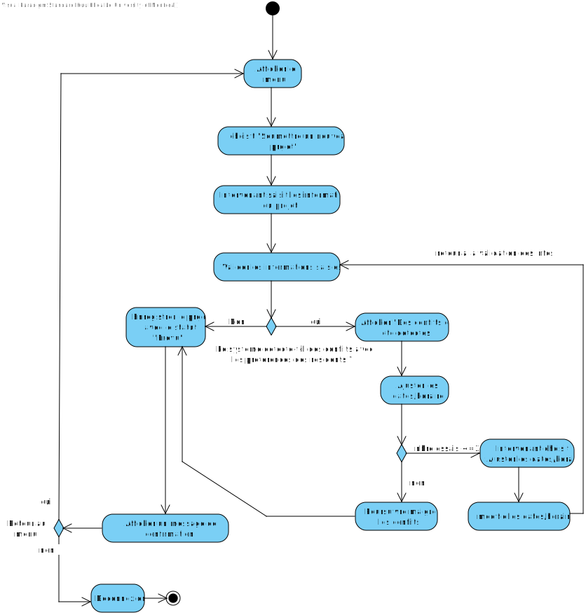Diagramme d'activité pour : Mise à jour des informations de travaux par un intervenant

Diagramme d'activité pour : Recherche de travaux par un résident

Diagramme d'activité pour : Retrait d'une candidature pour un intervenant

Diagramme d'activité pour : Soumission d'une candidature pour un intervenant
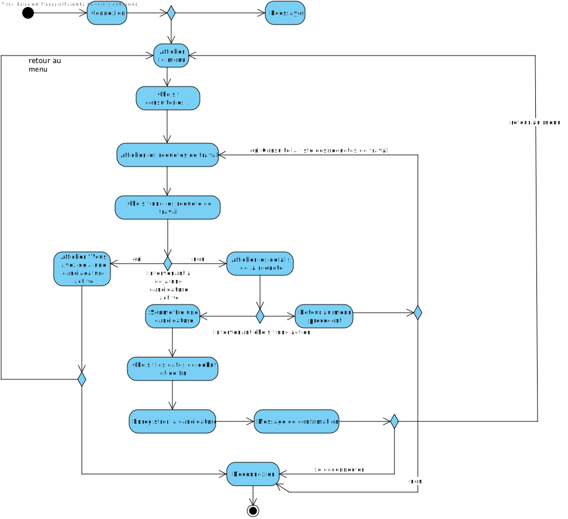Diagramme d'activité pour : Consultation des préférences des résidents par un intervenant
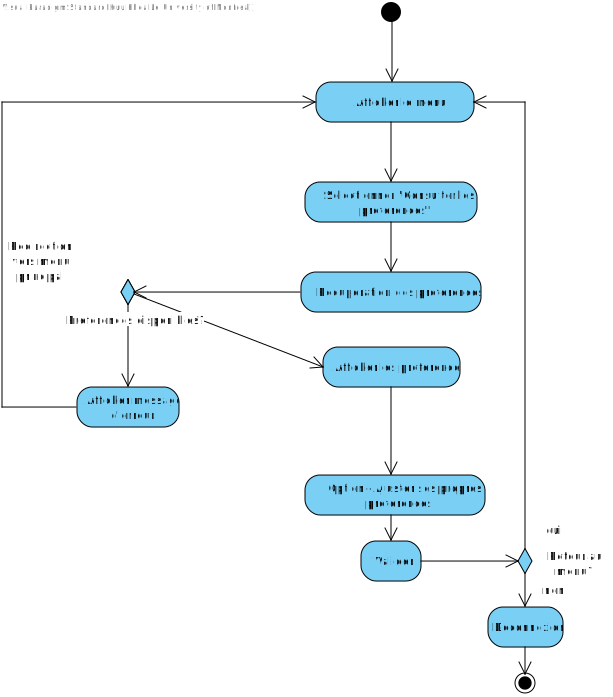Conception
Nous avons opté pour une architecture en couches adaptée pour une application en ligne de commande. Cette architecture sépare l'application en couches distinctes, chacune ayant une responsabilité spécifique.
-
Utilisateurs de l'Application
- Résidents
- Intervenants
- Moyen de communication : Interface CLI
-
Couche Présentation
- Interface utilisateur en ligne de commande (CLI)
- Gestion des entrées utilisateur
- Affichage des menus et informations
-
Couche Logique
- Traitement des données
- Modules principaux :
- Module d'Authentification
- Gestionnaire de Travaux
- Module de Notifications
- Gestionnaire de Requêtes
- Gestion des Préférences
-
Couche Accès aux Données
- Interaction avec le système de stockage
-
Système de Stockage
- Base de Données SQLite
- Stockage des données persistantes de l'application
-
Couche Intégration
- Communication avec les services externes (APIs de la Ville de Montréal)
- Récupération et traitement des données externes
-
Services Externes (APIs)
- APIs de la Ville de Montréal :
- Liste des travaux en cours
- Liste des entraves causées par les travaux en cours
- APIs de la Ville de Montréal :
Illustration de l'Architecture
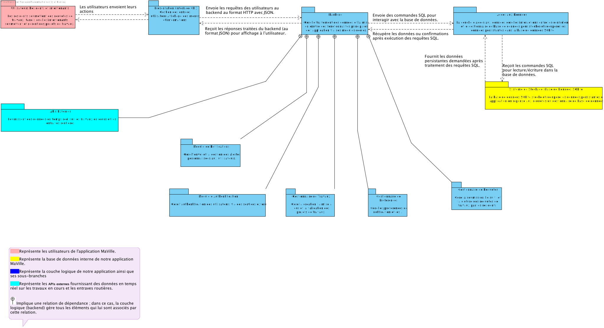Communications entre les Composantes
- Utilisateurs (Résidents et Intervenants) interagissent avec l'application via l'Interface CLI.
- La Couche Présentation transmet les entrées à la Couche Logique Métier.
- La Couche Logique applique les règles et fait appel à la Couche Accès aux Données si nécessaire.
- La Couche Accès aux Données interagit avec la Base de Données SQLite.
- La Couche Intégration communique avec les Services Externes (APIs) pour récupérer les données.
- Les données externes sont traitées et stockées dans la base de données pour être utilisées par l'application.
Diagramme de séquences
Diagramme de séquences pour Consulter les requêtes de travail
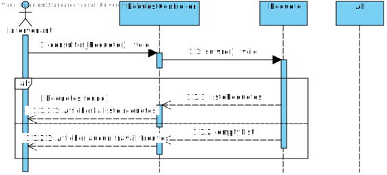
Un intervenant envoit une requête qui est reçue par le RequestController (consulter_Requete()).
Le RequestController envoie le message à un objet Requete.
Requete renvoie à RequestController soit une liste contenant des travaux ou une liste vide et les affiche à l'intervenant.
Diagramme de séquences pour consulter les entraves en cours
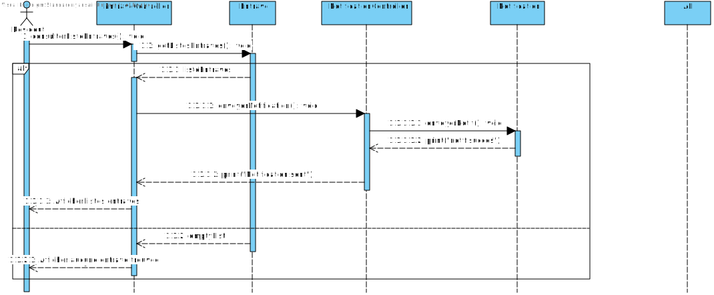
Un résident envoie une requête à EntraveController (consulterListeEntraves()).
Si la liste d'entrave n'est pas vide, l'objet Entrave reçoit le message venant de EntraveController et lui renvoit la liste.
Pour chaque entrave contenue dans la liste, NotificationController crée un objet Notification qui sera renvoyée à EntraveController et vers le résident.
Si la liste d'entraves est vide, aucune entrave ne sera affichée au résident.
Diagramme de séquence pour soumettre une requête de travail
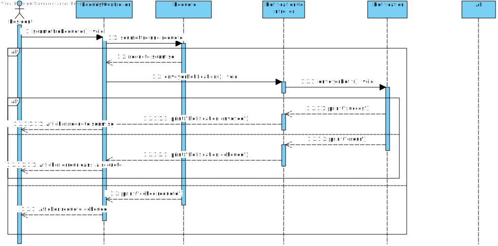
Un résident soumet une requête (soumettreRequete()) qui est envoyée au RequestController.
RequestController crée un objet Requête et une fois la requête soumise, envoie une demande de notification au NotificationController (envoyerNotification()).
Si la requête est bien remplie, NotificationController crée un objet Notification.
Le message "Success" retourné par la Notification est reçue au NotificationController qui renvoit "Notification envoyée" au RequestController.
La requête soumise est affichée au résident.
Si la requête est mal remplie, l'objet Notification qui est crée renvoie un message "erreur" qui est reçue au NotificationController.
"Notification échouée" est ensuite renvoyée au RequestController et affiche au résident le ou les erreurs de sa requête.
Si le résident ne parvient pas à remplir sa requête correctement, l'objet Requete envoie au RequestController "echec requete" et
RequestController renvoie au résident que la requête n'est pas soumise.
Diagramme de Classes
Illustration du Diagramme de Classes

Explication des Classes
-
MaVille : Classe principale qui coordonne les différentes entités de l'application.
- Attributs : instance, utilisateurs, projets, requetes, notifications
- Méthodes : demarrer(), arreter(), gererUtilisateur(), gererProjet()
-
Utilisateur : Classe de base pour tous les utilisateurs de l'application.
- Attributs : id, nom, email, mot_de_passe
- Méthodes : seConnecter(), seDeconnecter()
-
Résident : Hérite de Utilisateur, ajoute des attributs et méthodes spécifiques.
- Attributs supplémentaires : date_naissance, telephone, adresse_residentielle, preferences
- Méthodes : soumettreRequete(), consulterTravaux(), recevoirNotification()
-
Intervenant : Hérite de Utilisateur, gère des projets de travaux et les requêtes.
- Attributs supplémentaires : type, identifiant_ville, projets
- Méthodes : soumettreProjet(), consulterRequetesTravail(), recevoirNotification()
-
Projet : Représente les projets de travaux soumis par les intervenants.
- Attributs : id, titre, description, type_travail, quartiers_affectes, rues_affectees, date_debut, date_fin, horaire_travaux, statut
- Méthodes : modifier(), valider()
-
RequeteTravail : Représente les requêtes de travaux soumises par les résidents.
- Attributs : id, titre, description, type_travail, quartier, date_debut_voulue
- Méthodes : suivre(), cloturer()
-
Notification : Gère les notifications envoyées aux utilisateurs concernant les mises à jour et événements.
- Attributs : id, type, message, date
- Méthodes : envoyer()
-
Quartier : Représente un quartier de Montréal.
- Attributs : id, nom
-
Rue : Représente une rue de Montréal.
- Attributs : id, nom
-
Preferences : Gère les préférences de notification des résidents.
- Attributs : resident_id, quartier_preferences, rue_preferences
-
TypeTravail : Représente les différents types de travaux.
- Attributs : id, nom
-
Candidature : Représente une candidature d'un intervenant à une requête de travail.
- Attributs : id, intervenant_id, requete_travail_id, date_debut, date_fin
-
AuthController : Gère l'authentification des utilisateurs.
- Méthodes : login(), logout()
-
ProjetController : Gère les opérations liées aux projets.
- Méthodes : creerProjet(), mettreAJourProjet(), validerProjet()
-
RequeteTravailController : Gère les requêtes de travaux des résidents.
- Méthodes : soumettreRequete(), suivreRequete(), cloturerRequete()
-
NotificationController : Gère l'envoi des notifications.
- Méthodes : envoyerNotification()
-
CLIView : Gère l'interface en ligne de commande pour l'utilisateur.
- Méthodes : afficherMenu(), recevoirCommande(), afficherInformations()
Relations entre les Classes
-
Héritage :
- Résident et Intervenant héritent de Utilisateur.
-
Associations :
- MaVille gère plusieurs Utilisateur, Projet, RequeteTravail, et Notification.
- Un Intervenant gère plusieurs Projet.
- Un Résident soumet plusieurs RequeteTravail.
- Un Utilisateur (Résident ou Intervenant) reçoit plusieurs Notification.
- RequeteTravail et Projet peuvent générer plusieurs Notification.
- RequeteTravail peut avoir plusieurs Candidature.
- TypeTravail est associé à Projet et RequeteTravail.
- Quartier et Rue sont associés aux Projet et RequeteTravail.
-
Relations MVC :
- AuthController interagit avec Utilisateur.
- ProjetController interagit avec Projet.
- RequeteTravailController interagit avec RequeteTravail.
- NotificationController interagit avec Notification.
- CLIView interagit avec AuthController, ProjetController, RequeteTravailController, et NotificationController.
Analyse
Risques
-
Risque 1 : Disponibilité des APIs Externes
- Risque : Les APIs de la Ville de Montréal peuvent être indisponibles, entraînant des données manquantes ou obsolètes pour les utilisateurs.
- Solution : Mettre en cache les données récupérées, surveiller la disponibilité des APIs, gérer les erreurs avec des messages clairs.
-
Risque 2 : Conflits de Calendrier entre les Travaux
- Risque : Des travaux simultanés peuvent causer des perturbations accrues pour les résidents.
- Solution : Détecter automatiquement les conflits lors de la planification, coordonner les intervenants, informer les résidents.
-
Risque 3 : Problèmes de Sécurité liés à l'Authentification
- Risque : Les comptes utilisateurs pourraient être compromis en raison de failles de sécurité.
- Solution : Imposer des mots de passe forts, stocker les mots de passe de manière sécurisée, utiliser l'authentification à deux facteurs.
-
Risque 4 : Dégradation des Performances
- Risque : L'application pourrait être lente ou indisponible en cas de forte affluence.
- Solution : Optimiser le code, utiliser la mise en cache, concevoir une architecture scalable, effectuer des tests de charge.
-
Risque 5 : Non-Respect des Préférences des Résidents
- Risque : Les résidents pourraient être insatisfaits si leurs préférences ne sont pas prises en compte.
- Solution : Vérifier systématiquement les conflits avec les préférences, communiquer avec les résidents, permettre le feedback.
-
Risque 6 : Fuite de Données Personnelles
- Risque : Les informations sensibles des utilisateurs pourraient être exposées en cas de faille de sécurité.
- Solution : Chiffrer les données sensibles, contrôler strictement les accès, respecter les réglementations en vigueur.
Besoins non-fonctionnels
-
Exigence Non Fonctionnelle 1 : Performance
- Description : L'application doit être rapide et réactive.
- Détails :
- Temps de réponse : Actions courantes en moins de 2 secondes.
- Scalabilité : Gestion efficace de nombreux utilisateurs simultanés.
-
Exigence Non Fonctionnelle 2 : Sécurité
- Description : Les données des utilisateurs doivent être protégées.
- Détails :
- Protection des données : Stockage sécurisé des informations personnelles.
- Mots de passe sécurisés : Utilisation de hachage sécurisé.
-
Exigence Non Fonctionnelle 3 : Fiabilité
- Description : L'application doit être fiable et disponible.
- Détails :
- Disponibilité : Système opérationnel au moins 99,5 % du temps.
- Récupération rapide : Gestion efficace des pannes.
-
Exigence Non Fonctionnelle 4 : Utilisabilité
- Description : L'application doit être facile à utiliser.
- Détails :
- Interface conviviale : Facilité d'utilisation, même en mode texte.
- Accessibilité : Conformité aux normes pour les utilisateurs ayant des limitations.
-
Exigence Non Fonctionnelle 5 : Maintenabilité
- Description : Le système doit être facile à maintenir et à faire évoluer.
- Détails :
- Code structuré : Facilitation de la maintenance et des évolutions.
- Modularité : Ajout de fonctionnalités sans impact majeur.
-
Exigence Non Fonctionnelle 6 : Compatibilité
- Description : L'application doit fonctionner sur plusieurs plateformes.
- Détails :
- Multi-plateforme : Compatibilité avec Windows, macOS et Linux.
Besoins matériels
Description et justification des ressources nécessaires pour le projet :
-
Outils de stockage :
-
Description : Des serveurs dédiés ou des solutions cloud (comme Google Cloud) pour héberger l'application
et les bases de données. -
Justification : Une bonne infrastructure est nécessaire pour gérer les utilisateurs, les projets et les données
en temps réel, en garantissant une disponibilité élevée et une sécurité des données.
-
Description : Des serveurs dédiés ou des solutions cloud (comme Google Cloud) pour héberger l'application
-
Systèmes de sauvegarde :
- Description : Disques durs externes et/ou services de sauvegarde cloud.
-
Justification : Garantir la continuité des opérations en cas de perte de données ou de défaillance système.
Les sauvegardes régulières protègent les informations.
-
Équipements réseau :
- Description : Routeurs, switchs, et pare-feux.
-
Justification : Assurer une connexion réseau sécurisée et rapide pour le transfert de données entre l'application
et les utilisateurs. Une bonne infrastructure réseau est essentielle pour éviter les interruptions de service.
-
Dispositifs utilisateurs :
- Description : Ordinateurs, tablettes, et smartphones.
-
Justification : Les utilisateurs (résidents et intervenants) devront accéder à l'application via divers appareils.
L'application doit être compatible avec plusieurs systèmes d'exploitation pour maximiser l'accessibilité.
-
Équipement de développement :
- Description : Ordinateurs et logiciels de développement pour l'équipe technique.
- Justification : Les développeurs auront besoin de matériel performant pour coder, tester et déployer l'application efficacement.
Solution de stockage
Description de la solution de stockage :
-
Solutions de Stockage
- Choix de la base de données :
- Utilisation de la base de données relationnelle SQLite.
- Raisons du choix :
- Légèreté et simplicité d'utilisation.
- Pas besoin d'un serveur de base de données séparé.
- Bonne intégration avec de nombreux langages.
- Portabilité grâce au stockage dans un simple fichier.
- Données stockées :
- Utilisateurs : informations de connexion, préférences, coordonnées.
- Projets : détails des projets soumis par les intervenants.
- Requêtes de travaux : soumises par les résidents.
- Candidatures : des intervenants aux requêtes des résidents.
- Notifications : préférences et historique des notifications envoyées.
- Préférences des résidents : plages horaires préférées.
- Gestion des données :
- Mise en place de schémas relationnels pour gérer les relations entre les données.
- Validation des données lors de l'entrée pour assurer leur intégrité.
- Purge régulière des données obsolètes pour maintenir les performances.
- Sécurité des données :
- Stockage sécurisé des informations sensibles.
- Utilisation de hachage sécurisé pour les mots de passe.
- Contrôles d'accès pour protéger les données contre les accès non autorisés.
- Choix de la base de données :
Solution d'intégration
Description de la solution d'intégration :
-
Solutions d'Intégration
- Intégration des services externes (APIs de la Ville de Montréal) :
- Récupération des données :
- Appels réguliers aux APIs pour obtenir les dernières informations sur les travaux et les entraves.
- Gestion des erreurs en cas d'indisponibilité des APIs, avec des messages clairs aux utilisateurs.
- Stockage des données récupérées :
- Stockage dans des tables dédiées de la base de données locale.
- Mise en cache pour réduire les dépendances en temps réel et améliorer les performances.
- Mise à jour et synchronisation :
- Mises à jour incrémentielles pour optimiser les ressources.
- Validation et nettoyage des données avant intégration pour assurer leur fiabilité.
- Utilisation des données :
- Consultation par les utilisateurs via la base de données locale pour un accès rapide.
- Notifications automatiques en fonction des changements pertinents pour les utilisateurs concernés.
- Récupération des données :
- Gestion des données récupérées :
- Historique limité : Conserver les données sur une période définie pour éviter l'accumulation excessive.
- Purge régulière : Mise en place de routines de nettoyage pour supprimer les données obsolètes.
- Sécurité des données : Protection contre les accès non autorisés et respect des réglementations.
- Avantages de cette approche :
- Résilience : Fonctionnalité maintenue même si les APIs sont indisponibles.
- Performances optimisées : Accès rapide aux données locales sans attente des services externes.
- Contrôle des données : Possibilité de personnaliser et d'enrichir les données selon les besoins de l'application.
- Intégration des services externes (APIs de la Ville de Montréal) :
Discussion du Design
-
Séparation des responsabilités :
Chaque composant gère une tâche bien définie, réduisant les dépendances et rendant le système modulaire.
Exemple : Dans le code, la classeWorkRequestRepositoryest exclusivement responsable de gérer les requêtes SQL pour les demandes de travaux. Elle n'interfère pas avec la logique métier gérée parWorkRequestService. -
Utilisation des standards :
Les interactions entre les composants suivent des formats standards pour assurer la compatibilité et la clarté.
Exemple : Le backend utilise le format JSON pour transmettre des données. Dans le code, lorsqu'une requête est sauvegardée, les données comme le titre, la description et la date de début sont envoyées sous forme JSON. -
Évolutivité :
Le design facilite l’ajout de nouvelles fonctionnalités sans impact majeur sur les composants existants.
Exemple : Le diagramme inclut des modules distincts, comme le module de gestion des préférences, qui pourrait être enrichi sans affecter le module de notification. Dans le code, des méthodes commesavedansWorkRequestRepositorypeuvent facilement être étendues pour inclure d’autres champs. -
Gestion des dépendances :
Les dépendances externes comme les API ou la base de données sont isolées du système principal pour faciliter leur gestion.
Exemple : Dans le code, leDatabaseManagergère la connexion à SQLite, tandis que les classes commeWorkRequestRepositoryinteragissent uniquement via des méthodes clairement définies. -
Gestion des erreurs :
Des mécanismes pour gérer les erreurs et assurer une expérience utilisateur fluide sont intégrés.
Exemple : DansWorkRequestRepository, une exception SQL est levée si une insertion ou une requête échoue, ce qui permet au système d’afficher un message approprié à l'utilisateur. -
Modularité :
Les fonctionnalités sont réparties dans des modules distincts pour faciliter la maintenance.
Exemple : Dans le diagramme d'architecture, le gestionnaire de requêtes est distinct du gestionnaire de travaux. Cette séparation est reflétée dans le code où les classesWorkRequestServiceetProjectServicegèrent des fonctionnalités spécifiques. -
Clarté du code :
Les noms des classes et des méthodes sont explicites et reflètent leur rôle.
Exemple : La méthodefindByResidentEmaildansWorkRequestRepositoryindique clairement qu'elle récupère des requêtes associées à un email de résident. -
Utilisation des bonnes pratiques :
Les modèles comme le Data Access Object sont utilisés pour structurer l’accès aux données.
Exemple : La classeWorkRequestRepositoryencapsule toutes les interactions avec la base de données, respectant ainsi le principe de responsabilité unique. -
Documentation :
Les diagrammes et les commentaires dans le code décrivent clairement les relations entre les composants et leurs responsabilités.
Exemple : Le diagramme d'architecture illustre les interactions entre le module d'authentification et le backend via des requêtes HTTP. Les commentaires dansWorkRequestRepositoryexpliquent les requêtes SQL associées. -
Stockage des données :
Le système utilise SQLite pour persister les données.
Exemple : Dans le code, la méthodesaveutilise permet d'insérer des données dans la tablework_requestsdans un fichier de base de données SQLite.
Prototype
Le prototype en fichier .jar contient l'interface du côté résident et intervenant.
Informations de connection:
Utilisateur: citoyen ou intervenant
Mot de passe: maVille25.
Le cas d'utilisation couvert par ce prototype est la consultation des travaux en cours.
Commande pour exécuter le prototype sur un terminal:
java -jar MaVille.jar